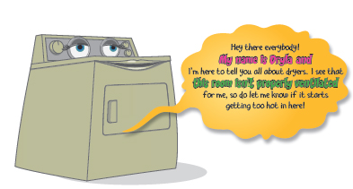

“Since about the same time washers were created, people have been experimenting with different forms of us drying machines. It all started back in the 1800s over in England and France. One of the most common early dryers was called a ventilator. The ventilator was a barrel-shaped metal drum with holes in it that was turned by hand over a fire. A Frenchman by the name of Pochon is credited with the invention of the first ventilator, which, not to brag, happened to be my great, great, great grandpa, Vincent. One early American patent for a clothes dryer was granted to George T. Sampson on June 7, 1892. Sampson’s dryer was an example of a ventilator type machine because it used the heat from a stove to dry clothes in a barrel.”
“Though motorized clothes dryers came about around the same time as the motorized washer, when the ‘automatic’ clothes dryers like me came into existence, many people didn’t buy us. For one thing, we were a little expensive at that time, and many people just did not want to spend the money after World War II, especially when a rope and a few clothespins was a lot cheaper! Needless to say, people caught on and now it is very common to find us in homes, laundry mats, hotels, and hospitals.”
“Now that I’ve given you a little of my family history, let me tell you how my parts work to get your clothes dry.”